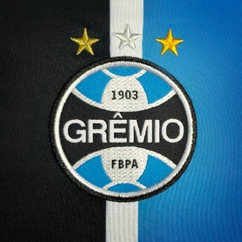
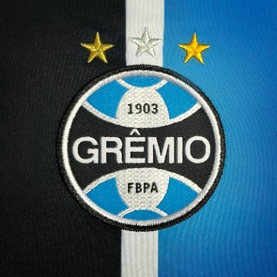

/i.s3.glbimg.com/v1/AUTH_da025474c0c44edd99332dddb09cabe8/internal_photos/bs/2023/i/C/hu6EFPQFAefqRhTO2Org/fla-flu.jpg)


/i.s3.glbimg.com/v1/AUTH_da025474c0c44edd99332dddb09cabe8/internal_photos/bs/2022/R/v/fBQkkGSjSW2bDKDBisoA/100227402-paris-saint-germains-brazilian-forward-neymar-celebrates-scoring-his-teams-fifth-goal-du.jpg)

Quanto maior a expectativa... As decepções de 2023 no futebol brasileiro

Comandantes em alta! Veja as estatísticas dos melhores técnicos do futebol brasileiro em 2023

Relembre os melhores gols da Juventus em 2023